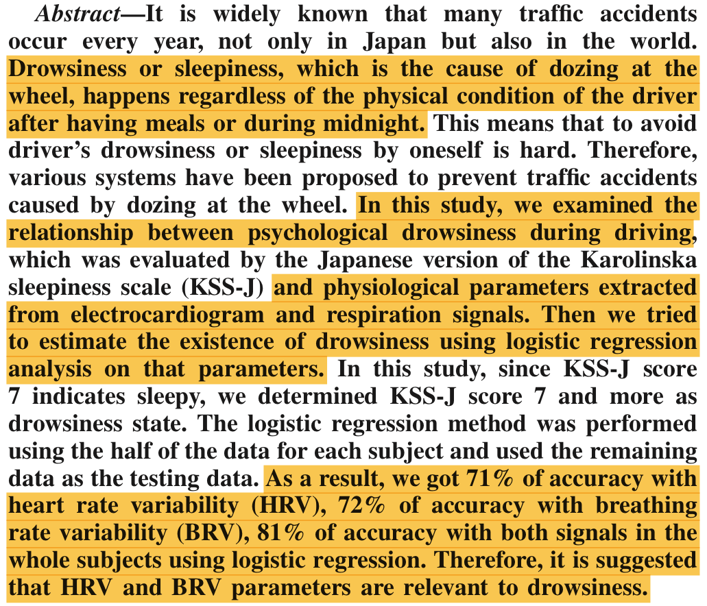
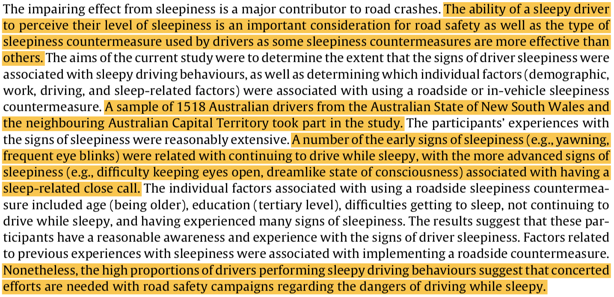
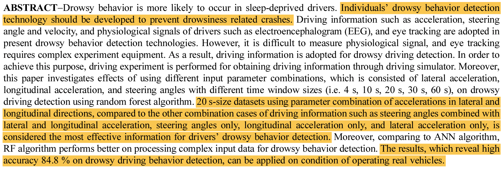
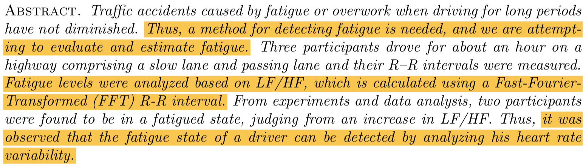
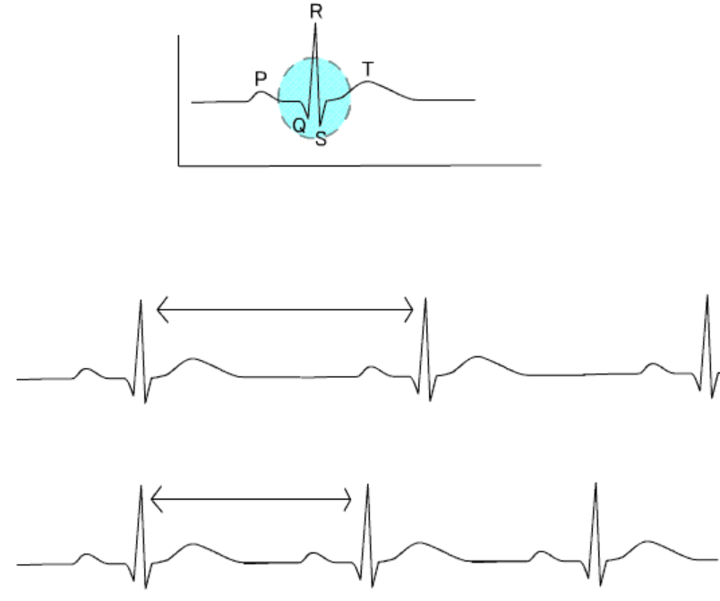
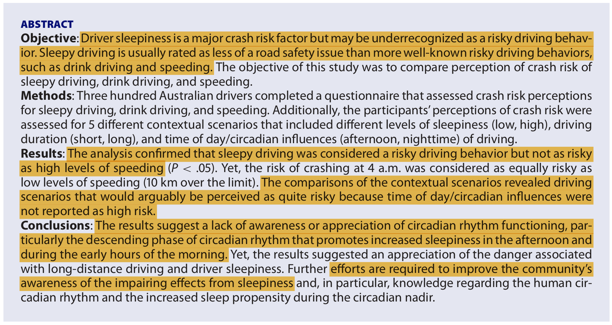

Sleepy Steery
A heart-rate monitoring device intended to monitor and prevent sleepy driving.
Drowsiness Estimation (2015)
This investigation looked at eight young (early 20s) men’s heart and respiratory rates as they drove four 50-minute sessions in a simulator after eating a big meal. By tracking these physiologic parameters, the study was able to determine how accurate they were for predicting drowsiness.
“Drowsiness Estimation Under Driving Environment by Heart Rate Variability and/or Breathing Rate Variability with Logistic Regression Analysis.” Igasaki et al. International Conference on BioMedical Engineering and Informatics. 2015. [.pdf]

Big Idea: 81% accuracy between the two parameters is pretty good! With this in mind, you might want to measure respiratory rate in addition to heart rate with your device.
Sleepy Driving Behaviours (2015)
Drowsiness is indicated by factors beyond heart and respiratory rate. This paper looks at some of them and examines whether or not they predict for a driver’s use of a sleepiness countermeasure.
“Examining signs of driver sleepiness, usage of sleepiness countermeasures and the associations with sleepy driving behaviours and individual factors.” Watling et al. Accident Analysis and Prevention. 2015. [.pdf]

Big Idea: Yawning, frequent blinking, and “dreamlike states of consciousness” are associated with continued sleepy driving and sleep-related near-accidents. As such, you guys might consider tracking these behaviors or alluding to them since it’s a real problem (that your device might address) that people continue to drive despite these behaviors.
Drowsy Behavior Detection (2016)
This is another driving simulation-based study. In this one, they fed data from the steering wheel and accelerator on the simulator to a complex computer algorithm that could calculate deviations from the desired path. This predicted strongly (almost 85% accuracy) for drowsy driving and was entirely non-invasive since it was based on data from the car’s mechanics.
“Drowsy Behavior Detection Based on Driving Information.” Wang et al. International Journal of Automotive Technology. 2016. [.pdf]

Big Idea: You don’t even need to track heart rate to monitor someone’s level of consciousness while the drive, but you guys could combine these technologies (computer analysis of driving data and physiological information) for an extra-accurate system. If you’re interested, here is a more recent article (with less accurate, although maybe more believable results) focusing on this same topic: [.pdf].
Detection of Fatigue (2016)
This study looks at heart monitor tracing (ECG) in real drivers to assess drowsiness. It’s more invasive than the mechanical data from the car, but it’s also highly personizable and potentially more accurate.
“Detection of Fatigue in Long-Distance Driving by Heart Rate Variability.”* 2016. [.pdf]

Big Idea: I’ll explain the EKG tracing above and how this study worked in person, but it’s neat to see that this is a legitimate way to potentially track sleepiness. Another, more recent, heart rate study on real roads confirms these results, and re-emphasizes that this approach would rely heavily on baseline (drowsy) measurements from the user: [.pdf]. Actually, in the past couple years, there have been a ton of these studies on heart rate and drowsy driving ([.pdf], [.pdf]), so I think you guys have a lot of really good scientific justification on your side.
In fact, I found an article from a company with a prototype steering wheel integrating this technology [.pdf], but it looks like major automobile manufacturers gave up on this idea since wearable devices are so much better at tracking this kind of metric. Perhaps Sleepy Steery is a car-integrated wearable?
Crash Risk Perception (2016)
Since you guys are trying to prevent sleepy driving, it’s a good idea to understand how well-known this problem is. This study looks at risk perceptions of sleepy driving versus drunk driving and speeding.
“Crash risk perception of sleepy driving and its comparisons with drunk driving and speeding: Which behavior is perceived as the riskiest?.”* 2016. [.pdf]

Big Idea: People may not take sleepy driving as seriously as is possible. This is both a challenge and an opportunity for you: Well-designed product function and a strong marketing campaign will make for a strong debut for your device, but if you don’t justify the dangers of drowsy driving, your target market might not be sufficiently convinced.
Summary Recommendations
Heart and respiratory rate are already good indicators of drowsy driving, but your accuracy might be improved even more by including additional metrics like an EKG (which can be a wearable or incorporated into the steering wheel) or behavior or mechanical (steering and acceleration) data. You also need to consider that people may not take sleepy driving as seriously as drunk driving (and you don’t really see people voluntarily installing Breathalyzers in their cars), so you should really aim to make a strong case that this is something people should care about and invest in.